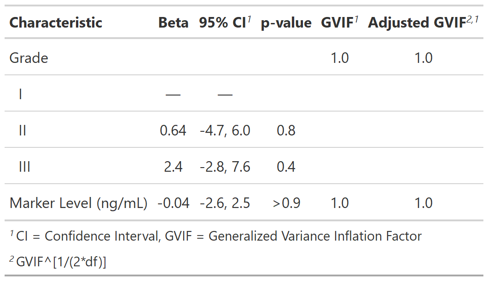

![[Experimental]](../help/figures/lifecycle-experimental.svg) Add the variance inflation factor (VIF) or
generalized VIF (GVIF) to the regression table.
Function uses
Add the variance inflation factor (VIF) or
generalized VIF (GVIF) to the regression table.
Function uses car::vif() to calculate the VIF.
| add_vif {gtsummary} | R Documentation |
Add the variance inflation factor (VIF) or
generalized VIF (GVIF) to the regression table.
Function uses car::vif() to calculate the VIF.
add_vif(x, statistic = NULL, estimate_fun = NULL)
x |
|
statistic |
|
estimate_fun |
Default is |
Example 1
 Example 2

# Example 1 ----------------------------------
if (requireNamespace("car")) {
add_vif_ex1 <-
lm(age ~ grade + marker, trial) %>%
tbl_regression() %>%
add_vif()
}
# Example 2 ----------------------------------
if (requireNamespace("car")) {
add_vif_ex2 <-
lm(age ~ grade + marker, trial) %>%
tbl_regression() %>%
add_vif(c("aGVIF", "df"))
}